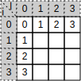
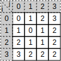
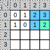

编辑距离 (Edit distance)
2015-00-00 | 更新: 2018-05-31
问题描述
给定 2 个字符串 a, b. 编辑距离是将 a 转换为 b 的最少操作次数，操作只允许如下 3 种：
- 插入一个字符，例如：fj -> fxj
- 删除一个字符，例如：fxj -> fj
- 替换一个字符，例如：jxj -> fyj
思路
用分治的思想解决比较简单，将复杂的问题分解成相似的子问题
假设字符串 a, 共 m 位，从 a[1] 到 a[m]
字符串 b, 共 n 位，从 b[1] 到 b[n]
d[i][j] 表示字符串 a[1]-a[i] 转换为 b[1]-b[j] 的编辑距离
那么有如下递归规律（a[i] 和 b[j] 分别是字符串 a 和 b 的最后一位）：
- 当
a[i]等于b[j]时，d[i][j] = d[i-1][j-1], 比如 fxy -> fay 的编辑距离等于 fx -> fa 的编辑距离 - 当
a[i]不等于b[j]时，d[i][j]等于如下 3 项的最小值：d[i-1][j]+ 1（删除a[i]）， 比如 fxy -> fab 的编辑距离 = fx -> fab 的编辑距离 + 1d[i][j-1]+ 1（插入b[j])， 比如 fxy -> fab 的编辑距离 = fxyb -> fab 的编辑距离 + 1 = fxy -> fa 的编辑距离 + 1d[i-1][j-1]+ 1（将a[i]替换为b[j]）， 比如 fxy -> fab 的编辑距离 = fxb -> fab 的编辑距离 + 1 = fx -> fa 的编辑距离 + 1
递归边界：
a[i][0] = i, b 字符串为空，表示将a[1]-a[i]全部删除，所以编辑距离为 ia[0][j] = j, a 字符串为空，表示 a 插入b[1]-b[j]，所以编辑距离为 j
代码
按照上面的思路将代码写下来
int edit_distance(char *a, char *b, int i, int j)
{
if (j == 0) {
return i;
} else if (i == 0) {
return j;
// 算法中 a, b 字符串下标从 1 开始，c 语言从 0 开始，所以 -1
} else if (a[i-1] == b[j-1]) {
return edit_distance(a, b, i - 1, j - 1);
} else {
return min_of_three(edit_distance(a, b, i - 1, j) + 1,
edit_distance(a, b, i, j - 1) + 1,
edit_distance(a, b, i - 1, j - 1) + 1);
}
}
edit_distance(stra, strb, strlen(stra), strlen(strb));
但是有个严重的问题，就是代码的性能很低下，时间复杂度是指数增长的
上面的代码中，很多相同的子问题其实是经过了多次求解，解决这类问题的办法是用动态规划
用动态规划思想优化时间复杂度
像以上解决思路，是从后往前算的，比如我想知道 edit_distance(a, b, i, j)
我可能需要知道 edit_distance(a, b, i-1, j-1)
有一种想法不错，就是从前往后算，先算出各个子问题，然后根据子问题，计算出原问题，
对于这个问题性能不错，而且也挺容易理解，下面就来说一说
例如以字符串 a = "fxy", b = "fab" 为例
-
首先建立一个矩阵，用来存放子问题及原问题的编辑距离，并将递归边界在矩阵中填好，如下：

-
然后计算 i = 1, j = 1 所对应的编辑距离：比较
a[i]和b[j]是否相等然后根据递归规律算出这个值
比如在这种情况下a[i] = f和b[j] = f, 那么d[i][j]就等于d[i-1][j-1]等于 0
然后计算 i = 1, j = 2 直到算出 i = 3, j = 3, 原问题的编辑距离就等于d[3][3]
最终矩阵如下：
现在的时间复杂度已到了可接受范围，为 O(mn)
代码如下：
int edit_distance(char *a, char *b)
{
int lena = strlen(a);
int lenb = strlen(b);
int d[lena+1][lenb+1];
int i, j;
for (i = 0; i <= lena; i++) {
d[i][0] = i;
}
for (j = 0; j <= lenb; j++) {
d[0][j] = j;
}
for (i = 1; i <= lena; i++) {
for (j = 1; j <= lenb; j++) {
// 算法中 a, b 字符串下标从 1 开始，c 语言从 0 开始，所以 -1
if (a[i-1] == b[j-1]) {
d[i][j] = d[i-1][j-1];
} else {
d[i][j] = min_of_three(d[i-1][j]+1, d[i][j-1]+1, d[i-1][j-1]+1);
}
}
}
return d[lena][lenb];
}
这个算法的空间复杂度为 O(mn), 当一步步填写矩阵的过程中，应该能够感受到， 空间复杂度可以继续优化，因为计算矩阵的时候总是需要有限的量，同一时间并不需要所有矩阵的值
根据具体问题优化空间复杂度
还是以 a = "fxy", b = "fab" 为例，例如计算 d[1][3], 也就是下图中的绿色方块，
我们需要知道的值只需 3 个，下图中蓝色方块的值

进一步分析，我们知道，当计算 d[1] 这行的时候，我们只需知道 d[0] 这行的值，
同理我们计算当前行的时候只需知道上一行就可以了
再进一步分析，其实我们只需要一行就可以了，每次计算的时候我们需要的 3 个值，
其中上边和左边的值我们可以直接得到，坐上角的值需要临时变量（如下代码使用 old）来记录
代码如下：
int edit_distance(char *a, char *b)
{
int lena = strlen(a);
int lenb = strlen(b);
int d[lenb+1];
int i, j, old, tnmp;
for (j = 0; j <= lenb; j++) {
d[j] = j;
}
for (i = 1; i <= lena; i++) {
old = i - 1;
d[0] = i;
for (j = 1; j <= lenb; j++) {
temp = d[j];
// 算法中 a, b 字符串下标从 1 开始，c 语言从 0 开始，所以 -1
if (a[i-1] == b[j-1]) {
d[j] = old;
} else {
d[j] = min_of_three(d[j] + 1, d[j-1] + 1, old + 1);
}
old = temp;
}
}
return d[lenb];
}
写代码的过程中需要注意的一点就是，当一行计算好之后开始下一行的时候，
要初始化 old 和 d[0] 的值
优化过后时间复杂度还是 O(mn), 空间复杂度降低了，以上代码是 O(n), 其实很简单可以写成 O(min(m,n)), 为了便于理解，就不具体写了